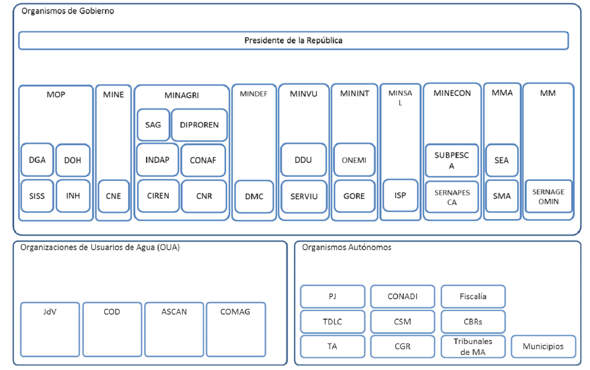

3. Marco legal e institucional del agua en Chile
«When the well is dry, we know the worth of water»
(Benjamin Franklin, 1706-1790)
3.1. Introducción
La gestión de los recursos hídricos en Chile ha estado marcada por un proceso histórico de construcción normativa y por una fuerte impronta institucional. A lo largo de las últimas décadas, el país ha experimentado importantes transformaciones en su marco regulatorio, reflejo tanto de las particularidades geográficas y climáticas de su territorio como de los cambios sociales, económicos y ambientales. El punto de partida de este marco moderno fue el Código de Aguas de 1981 (Sección 3.2), que estableció un régimen de derechos de aprovechamiento con carácter de propiedad privada, transferibles en el mercado. Este modelo buscó fomentar la eficiencia en el uso del recurso, pero generó tensiones en torno al acceso equitativo y a la sustentabilidad de los ecosistemas.
Las críticas acumuladas y las nuevas exigencias ambientales llevaron a la Reforma de 2005 (Sección 3.3), cuyo propósito fue introducir mecanismos de mayor control estatal y regulación sobre los derechos de agua, incorporando consideraciones de interés público. Sin embargo, los desafíos de escasez hídrica, el cambio climático y la creciente conflictividad entre usuarios impulsaron la necesidad de modificaciones adicionales, cristalizadas en la Reforma de 2022 (Sección 3.4). Esta última reforma significó un giro relevante al reconocer el agua como un bien nacional de uso público, al fortalecer los criterios de sustentabilidad en la asignación y al incorporar con mayor claridad la prioridad del consumo humano y el resguardo de los ecosistemas.
Junto con la evolución normativa, la gobernanza del agua en Chile se enfrenta a un problema persistente: la fragmentación institucional (Sección 3.5). La coexistencia de múltiples organismos con competencias superpuestas en gestión, fiscalización y planificación ha dificultado la coordinación y la eficiencia en la toma de decisiones. Esta dispersión institucional plantea desafíos significativos para la implementación efectiva de las políticas hídricas y para la construcción de una gestión integrada y sostenible del recurso.
En conjunto, estas secciones ofrecen una mirada crítica a la trayectoria del derecho de aguas en Chile, mostrando cómo la normativa y las instituciones han evolucionado en respuesta a las tensiones entre desarrollo económico, equidad social y sostenibilidad ambiental.
3.2. Oferta y demanda de agua en Chile: contraste norte-sur
En Chile existe una marcada disparidad entre la oferta y la demanda de agua entre el norte y el sur del país. El norte, especialmente desde la región de Coquimbo hasta el extremo septentrional, concentra gran parte de la población, la agricultura intensiva y la minería de alta exigencia hídrica, pero dispone de menos del 1% del agua del país. Entre las regiones de Coquimbo y Ñuble se consume aproximadamente el 80% del agua nacional, aunque solo se dispone del 8 % del recurso hídrico [ElDesconcierto25] [Sustentablecl25]. En algunas áreas al norte de Santiago, la disponibilidad per cápita es inferior a 800 m³ por año, muy por debajo del umbral mínimo de 1 700 m³ recomendado para la subsistencia humana [iAgua14].
En contraste, en la zona sur, desde Los Lagos hasta Magallanes, se concentra alrededor del 75 % de la disponibilidad hídrica nacional (Sustentable, 2025). Esta abundancia permite superar los desequilibrios estructurales presentes en el norte, aunque tampoco está exenta de desafíos: proyecciones climáticas estiman una disminución de hasta un 25% en la disponibilidad de agua en la zona centro-norte y de cerca de un 40% en la zona sur para el período 2030–2060 [ChileMineria21] [Codexverde21].
La brecha entre oferta y demanda en el norte ha tenido profundas implicancias sociales y productivas. En la minería del desierto de Atacama, la sobreexplotación de acuíferos ha generado conflictos ambientales y ha impulsado la construcción de plantas desaladoras para garantizar el suministro [TheGuardian25] [Reuters24]. Estas soluciones alivian parcialmente la presión sobre fuentes superficiales, pero conllevan altos costos energéticos y ambientales.
En síntesis, el contraste entre un norte árido y de alta demanda, frente a un sur húmedo pero amenazado por el cambio climático, refleja los complejos desafíos para la planificación hídrica nacional. Esta realidad exige políticas diferenciadas, capaces de abordar tanto la escasez estructural del norte como la reducción proyectada de la disponibilidad en el sur.
3.3. El Código de Aguas de 1981
La gestión del agua en Chile constituye un caso paradigmático a nivel mundial, debido a la fuerte impronta que dejó el Código de Aguas de 1981, el cual estableció un régimen de derechos de aprovechamiento basado en el mercado. Este modelo, singular por su alto grado de privatización y escasa intervención estatal, ha sido objeto de intensos debates en la literatura especializada y en organismos internacionales, en tanto permitió dinamizar sectores económicos estratégicos, pero también generó tensiones sociales y ambientales [Bau98].
El marco normativo surgió en un contexto de profundas transformaciones políticas y económicas durante la dictadura militar, caracterizado por la adopción de un enfoque neoliberal que buscaba reducir el papel del Estado en la economía y promover la iniciativa privada [VR18]. En este contexto, el Código de Aguas consagró la visión del agua como un bien económico, asignado mediante derechos de aprovechamiento que podían ser solicitados de manera gratuita, eran concedidos a perpetuidad, transferibles en el mercado y separables de la propiedad de la tierra [HE95]. Estos principios configuraron un sistema de mercantilización sin precedentes a nivel global, en el que los derechos hídricos pasaron a ser tratados de manera análoga a los activos de propiedad privada.
Este diseño institucional tuvo importantes efectos en la economía. Por un lado, otorgó certeza jurídica a los usuarios, lo que favoreció inversiones significativas en sectores clave como la minería, la agroindustria de exportación y la generación hidroeléctrica [Don15]. Por otro, consolidó un mercado de aguas que permitió reasignaciones entre distintos usos productivos, bajo la premisa de que el mecanismo de precios garantizaría una distribución más eficiente. Sin embargo, la experiencia chilena también mostró las limitaciones de este enfoque. La ausencia de una regulación robusta dificultó la protección de caudales ecológicos, la resolución de conflictos entre usuarios y la garantía de acceso equitativo al recurso, especialmente en zonas rurales y comunidades indígenas [Bau15].
La concentración de derechos en determinados sectores económicos y territorios profundizó desigualdades sociales y generó impactos ambientales relevantes, como la sobreexplotación de acuíferos y la disminución de caudales en cuencas altamente demandadas [LarrainP10]. Estos problemas motivaron un creciente cuestionamiento académico, social y político al modelo, evidenciando que la lógica puramente mercantil resultaba insuficiente para abordar los desafíos de la seguridad hídrica, la equidad y la sostenibilidad.
En síntesis, el Código de Aguas de 1981 representó un experimento institucional sin precedentes, que transformó profundamente la relación entre el Estado, los usuarios y el agua en Chile. Si bien su diseño contribuyó a impulsar sectores económicos estratégicos, la falta de mecanismos efectivos de regulación y de consideración de los bienes comunes ambientales terminó por abrir un debate que marcaría las reformas posteriores al marco legal del agua en el país.
3.4. Tipos de derechos de aprovechamiento de aguas en Chile
El régimen jurídico de las aguas en Chile, definido originalmente por el Código de Aguas de 1981 y reformado en distintas instancias, reconoce los derechos de aprovechamiento de aguas (DAA) como títulos que habilitan a sus titulares a usar y gozar de este recurso. Dichos derechos son bienes privados, transferibles y susceptibles de transacción en el mercado, aunque su ejercicio se encuentra regulado por la autoridad administrativa y sujeta a las disposiciones de gestión y conservación del recurso. La clasificación de los DAA responde a distintos criterios, entre los que se encuentran su permanencia en el tiempo, su forma de uso y el carácter del consumo que generan.
En primer lugar, de acuerdo a su permanencia en el tiempo los DAA se clasifican en permanentes y eventuales. Los derechos permanentes garantizan al titular la posibilidad de usar el agua en forma continua, en la medida de la disponibilidad del recurso. Son aquellos que otorgan seguridad en la dotación, lo que los hace altamente valorados en sectores productivos como la agricultura de riego intensivo y la minería. En contraposición, los derechos eventuales solo pueden ejercerse cuando existen excedentes en la fuente, es decir, una vez satisfechas las necesidades de los derechos permanentes. En consecuencia, presentan un mayor nivel de incertidumbre, pues dependen de la hidrología interanual y de la situación específica de la cuenca.
Por otra parte, en cuanto a su forma de uso la normativa distingue entre derechos consuntivos y no consuntivos, en función de si el uso del DAA implica o no el consumo total del recurso. Los derechos consuntivos permiten utilizar el agua de manera que no se devuelva a su fuente original, como ocurre en el riego agrícola, el abastecimiento urbano o ciertos procesos industriales. Este tipo de derechos suele concentrar la mayor presión sobre el recurso hídrico, especialmente en zonas de escasez. En cambio, los derechos no consuntivos autorizan el uso del agua con la obligación de restituirla a su cauce, permitiendo su empleo sucesivo por otros usuarios. Un ejemplo paradigmático de este tipo son los proyectos hidroeléctricos de pasada, donde el agua se utiliza para generar energía y luego retorna al río.
Finalmente, de acuerdo al carácter del consumo que generan los DAA se clasifican en continuos y discontinuos. Los derechos continuos habilitan al titular a usar el agua de manera ininterrumpida a lo largo del tiempo, lo que suele ser indispensable para actividades como el consumo humano o el riego permanente. Por el contrario, los derechos discontinuos restringen el uso a ciertos periodos del año o a momentos específicos, generalmente vinculados a la estacionalidad de la demanda o a los acuerdos de distribución local.
La combinación de estas categorías permite caracterizar la diversidad de derechos que coexisten en las cuencas chilenas. Por ejemplo, un usuario agrícola puede poseer un derecho consuntivo, permanente y continuo, mientras que un generador hidroeléctrico podría contar con un derecho no consuntivo, permanente y discontinuo. Esta flexibilidad en la configuración de los DAA ha facilitado la expansión de múltiples actividades productivas, aunque también ha dado lugar a tensiones en la gestión integrada del recurso, particularmente en contextos de escasez hídrica y sobreotorgamiento de derechos.
Las reformas más recientes al Código de Aguas (Ley N.º 21.064 de 2018 y Ley N.º 21.435 de 2022) han introducido criterios de interés público, sustentabilidad ambiental y seguridad hídrica, modificando el régimen de otorgamiento y caducidad de los derechos. No obstante, la clasificación fundamental —permanentes, eventuales, consuntivos, no consuntivos, continuos y discontinuos— sigue constituyendo la base del sistema jurídico que regula el acceso y uso de las aguas en Chile.
3.5. Fragmentación institucional
Una de las características más persistentes de la gestión del agua en Chile ha sido la fragmentación institucional. De acuerdo con el Banco Mundial, hacia 2011 existían más de 40 organismos donde se distribuían competencias parciales sobre el recurso hídrico en más de 100 funciones, lo que dificultaba la coordinación y la implementación de una política integral [WorldBank11].

En Chile hay 43 instituciones que ejercen un total de 102 funciones relacionadas a al gestión de los recursos hídricos. Fuente: :cite:`WorldBank2013`.
En este entramado institucional, destacan los siguientes actores principales:
La Dirección General de Aguas (DGA), dependiente del Ministerio de Obras Públicas, como la entidad encargada de otorgar derechos, llevar el catastro de usuarios y fiscalizar el cumplimiento de las normas.
La Superintendencia de Servicios Sanitarios (SISS), con competencias en la regulación del agua potable y saneamiento urbano.
La Comisión Nacional de Riego (CNR), bajo el Ministerio de Agricultura, orientada a fomentar la inversión en infraestructura de riego y eficiencia hídrica.
El Ministerio del Medio Ambiente (MMA), responsable de la evaluación ambiental de proyectos y la protección de los ecosistemas.
Las Direcciones de Obras Hidráulicas (DOH) y las Direcciones de Obras Municipales, que administran infraestructura menor y aspectos locales de uso del recurso.
Este mosaico institucional fue señalado como un obstáculo para la gobernanza hídrica, ya que cada organismo operaba con objetivos sectoriales y sin una coordinación centralizada. El Banco Mundial (2013) enfatizó que la ausencia de un ente rector con capacidad para articular políticas intersectoriales limitaba la efectividad del sistema, especialmente en un contexto de creciente escasez [WorldBank13].
3.6. Reforma de 2005
La primera gran reforma al Código de Aguas se llevó a cabo en 2005, tras más de una década de debate político y social que involucró al Congreso, a organizaciones de usuarios y a la sociedad civil, mediante la promulgación de la Ley N° 20.017. Uno de los principales cambios introducidos por esta ley fue la patente por no uso, un mecanismo que obligaba a los titulares de derechos a pagar una tarifa anual en caso de no utilizar efectivamente el recurso. Esta medida buscaba combatir la especulación y la acumulación de derechos ociosos en manos de actores privados, una práctica que había generado críticas debido a que restringía el acceso al agua para nuevos usuarios y limitaba la eficiencia del mercado [HE95]. Si bien en un comienzo las patentes fueron consideradas como una señal regulatoria innovadora, con el tiempo se constató que su efecto fue heterogéneo: mientras en algunos sectores incentivó la puesta en uso de derechos, en otros, especialmente donde los precios del agua eran muy altos, los grandes usuarios prefirieron pagar la patente sin modificar su comportamiento [Bau15].
Otro cambio de importancia fue la introducción de los caudales ecológicos mínimos, cuyo objetivo era resguardar la sustentabilidad de los ecosistemas acuáticos y mitigar el impacto de la sobreexplotación. Sin embargo, la aplicación de esta disposición quedó limitada a las nuevas concesiones, sin afectar los derechos ya otorgados con anterioridad a la reforma. Esta limitación redujo su alcance real, ya que la mayor parte de las cuencas con alta presión sobre el recurso ya contaban con derechos otorgados antes de 2005 [DJ99]. De este modo, los caudales ecológicos se constituyeron más en una señal de cambio cultural hacia una gestión ambientalmente más consciente que en un instrumento efectivo de protección en el corto plazo.
La reforma también otorgó nuevas atribuciones a la Dirección General de Aguas (DGA), fortaleciendo su rol de fiscalización y control. En particular, se estableció la posibilidad de que la DGA declarara áreas de restricción y prohibiera la constitución de nuevos derechos en zonas con acuíferos sobreexplotados. Esta medida representó un avance relevante, ya que reconocía explícitamente la existencia de límites físicos a la explotación intensiva del recurso, aunque en la práctica su aplicación se encontró con restricciones derivadas de la falta de capacidades técnicas y de recursos institucionales [WorldBank11].
En conjunto, la reforma de 2005 significó un primer paso hacia un mayor equilibrio entre la lógica de mercado heredada del Código de 1981 y la necesidad de una gestión más sustentable. No obstante, diversos autores han señalado que los cambios fueron insuficientes para resolver los problemas estructurales del modelo, en particular la inequidad en el acceso, la debilidad del Estado para intervenir en situaciones de crisis hídrica y la ausencia de una gobernanza integral del agua [Bau15].
3.7. Reforma de 2022
Tras más de 40 años de demandas sociales por garantizar el acceso al agua potable, Chile promulgó el 6 de abril de 2022 la Ley N° 21.435, marcando una reforma importante al Código de Aguas, después de más de una década de tramitación. Esta reforma representó un cambio de paradigma en la gestión del recurso hídrico, modernizando la gobernanza del agua, priorizando el consumo humano y la sostenibilidad ambiental, y alejándose de la visión predominantemente mercantil establecida en 1981 y reforzada parcialmente en 2005.
Las modificaciones relaizadas en 2022 introdujeron la noción de que el acceso al agua constituye un derecho humano esencial, alineando la legislación nacional con estándares internacionales como la resolución de Naciones Unidas de 2010 que reconoce explícitamente este derecho [UnitedNations10]. En este contexto, el agua pasó a ser considerada un bien nacional de uso público cuya utilización debe priorizar el consumo humano, el saneamiento y la preservación de los ecosistemas por sobre otros fines productivos, marcando un giro hacia un enfoque de seguridad hídrica y sostenibilidad.
Uno de los cambios centrales fue la transformación de los derechos de aprovechamiento en concesiones de duración limitada, sujetas a condiciones de uso efectivo y sustentable. A diferencia del régimen previo de derechos indefinidos y con fuerte carácter de propiedad privada, las concesiones otorgadas tras 2022 tienen un horizonte temporal acotado, renovable bajo evaluación del cumplimiento de las normas ambientales y sociales. Esto implicó que los derechos ya no se conciben como activos patrimoniales absolutos, sino como autorizaciones administrativas condicionadas, lo cual generó un intenso debate sobre el alcance de la seguridad jurídica de los usuarios y el equilibrio entre la regulación estatal y la iniciativa privada [VR18].
La reforma también fortaleció los caudales ecológicos, al establecer que éstos no solo se aplicarían a nuevas concesiones, como ocurría tras la reforma de 2005, sino que además podrían imponerse de manera retroactiva en ciertos contextos de sobreexplotación o crisis ambiental. Esta disposición buscó responder a la creciente evidencia de deterioro de ecosistemas fluviales y humedales en diversas regiones del país, especialmente en cuencas semiáridas como las de la zona centro-norte [WorldBank13]. Al mismo tiempo, se otorgaron mayores atribuciones a la Dirección General de Aguas (DGA), no solo en fiscalización, sino también en la facultad de extinguir concesiones por no uso prolongado, complementando así el sistema de patentes introducido en 2005.
Finalmente, la reforma de 2022 fue percibida como un avance hacia una gobernanza más integral del agua, en la que la sustentabilidad ambiental, la equidad social y el interés público tienen un peso normativo superior al de la rentabilidad económica. Sin embargo, persisten desafíos significativos en su implementación, dado que el país aún mantiene un sistema institucional fragmentado, con múltiples ministerios y organismos involucrados en la gestión hídrica y con capacidades desiguales para ejercer el control y la coordinación efectiva [WorldBank11]. La eficacia de esta reforma, por tanto, dependerá no solo del marco normativo, sino también de la capacidad del Estado para articular políticas coherentes y garantizar su cumplimiento en un escenario marcado por la crisis climática y la creciente escasez hídrica.
Principales cambios introduccidos al Código de Aguas en la Ley N° 21.435 de 2022.
Reconocimiento del derecho humano al agua y de diversas funciones del agua, con prioridad en el consumo humano. La reforma consagra que el acceso al agua potable y el saneamiento es un derecho humano esencial e irrenunciable que debe ser garantizado por el Estado, priorizándolo sobre otros usos como la agricultura y la industria. Este cambio redefine el agua como un bien público, enfatizando su valor social y ecológico. Asimismo, establece que las aguas cumplen diversas funciones, principalmente las de subsistencia, que incluyen el uso para el consumo humano, el saneamiento y el uso doméstico de subsistencia; las de preservación ecosistémica, y las productivas, estableciéndose, además, que siempre prevalecerá el uso para el consumo humano, el uso doméstico de subsistencia y saneamiento tanto en el otorgamiento como en la limitación al ejercicio de los derechos de aprovechamiento de aguas. La Ley Nº 21.435 elimina del epígrafe del Título II del antiguo Código de Aguas la palabra dominio, reconociendo que ningún habitante puede tener un derecho de dominio sobre las aguas otorgadas en concesión. Con esto, se corrige una de las principales críticas al antiguo Código: que los derechos de aprovechamiento de aguas funcionaban prácticamente como derechos de dominio perpetuos. Además, el artículo 5, modificado por la misma ley, establece en su primer inciso que el dominio y uso de las aguas “pertenece a todos los habitantes de la nación”, dejando claro que ninguna persona puede adjudicarse individualmente el dominio de las aguas.
Introducción de DAA con plazo fijo: La Reforma establece que el DAA es un derecho real que recae sobre las aguas y consiste en el uso y goce temporal de ellas, de conformidad con las reglas, requisitos y limitaciones que prescribe el Código de Aguas. Dicho derecho se origina en virtud de una concesión, que tendrá una duración de treinta años y se concederá de conformidad con los criterios de disponibilidad de la fuente de abastecimiento y/o de sustentabilidad del acuífero, según corresponda. En caso que la autoridad considere que el DAA deba otorgarse por un plazo menor, deberá justificar dicha decisión por resolución fundada. Esta modificación promueve un uso más responsable y sostenible del agua. Este cambio busca evitar la asignación indefinida y fomentar la devolución de los derechos no utilizados al dominio público.
Organizaciones obligatorias de usuarios en zonas sobreexplotadas: En regiones con escasez de agua, los usuarios deben formar organizaciones de usuarios en el plazo de un año desde la declaración de la Zona de Prohibición. Estas organizaciones deben instalar sistemas de monitoreo para reportar los datos de extracción a la Dirección General de Aguas (DGA), lo que facilita una mejor gestión y supervisión.
Establece la regulación del caudal ecológico: El Artículo 129 bis 1 de la Ley N° 21.435 establece que la Dirección General de Aguas (DGA) debe velar por la preservación de la naturaleza y la protección ambiental al otorgar derechos de aprovechamiento de aguas. Para ello, define un caudal ecológico mínimo, considerando las condiciones naturales de cada fuente superficial. Por norma general, este caudal no puede superar el 20% del caudal medio anual, aunque el Presidente de la República, con informe favorable del Ministerio del Medio Ambiente, puede fijar caudales de hasta 40% en casos excepcionales mediante decreto fundado. La DGA también puede establecer caudales ecológicos mínimos para derechos existentes en áreas protegidas (parques, reservas, humedales de importancia internacional, etc.) y al autorizar traslados de puntos de extracción o en la evaluación ambiental de proyectos, siempre asegurando que el caudal ambiental no sea inferior al mínimo definido por la DGA.
Planificación estratégica de los recursos hídricos: Se establece que cada cuenca del país deberá contar con un Plan Estratégico de Recursos Hídricos tendiente a propiciar la seguridad hídrica en el contexto de las restricciones asociadas al cambio climático, el cual será público y deberá ser actualizado cada diez años o menos.
Mayor Supervisión Regulatoria y Sanciones: La reforma faculta a la DGA para suspender o limitar temporalmente los derechos de agua en casos de emergencia hídrica. También simplifica los procedimientos sancionatorios, permitiendo notificaciones electrónicas y ampliando las capacidades de cumplimiento.
Necesidad de regularizar los DAA e inscribirlos en el Catastro Público de Aguas. Los DAA reconocidos o constituidos antes de la publicación de esta ley, así como aquellos usos regularizados por autoridad competente conforme a la legislación actual, continuarán estando vigentes. Sin embargo, se extinguen por su no uso, sin perjuicio de que a su vez caducan por su no inscripción en el Registro de Propiedad de Aguas del Conservador de Bienes Raíces (CBR).
Extinción por no uso de DAA. La Ley contempla la extinción de los DAA. En efecto, la norma aprobada dispone que los DAA se extinguirán total o parcialmente si su titular no hace uso efectivo del recurso en los términos dispuestos en el artículo 129 bis 9°, el que se refiere y define a las obras de captación tanto de las aguas subterráneas, como superficiales, las que deberán ser suficientes y aptas para la efectiva utilización de las aguas, capaces de permitir su captación o alumbramiento, y su restitución al cauce, en el caso de los DAA no consuntivos. En el caso de los derechos consuntivos, el plazo de extinción será de cinco años, y en el caso de aquellos de carácter no consuntivos será de diez años.
Limitaciones al ejercicio de los DAA en función del interés público. La reforma al Código de Aguas reconoce que las aguas, en cualquiera de sus estados, son bienes nacionales de uso público. Asimismo, que, en función del interés público, se constituirán DAA, los cuales podrán ser limitados en su ejercicio. Para estos efectos, se entenderán comprendidas bajo el interés público las acciones que ejecute la autoridad para resguardar el consumo humano y el saneamiento, la preservación ecosistémica, la disponibilidad de las aguas, la sustentabilidad acuífera, y en general, aquellas destinadas a promover un equilibrio entre eficiencia y seguridad en los usos productivos de las aguas.
Aguas del Minero. El artículo 56 bis establece que las aguas halladas por concesionarios mineros durante exploración o explotación pueden ser utilizadas solo para las faenas mineras, y deben ser registradas ante la Dirección General de Aguas (DGA) dentro de 90 días, indicando ubicación, volumen y actividad que justifica su uso. Las aguas sobrantes también deben informarse. El uso de estas aguas termina al cerrar la faena, caducar o extinguirse la concesión, dejar de ser necesarias o destinarse a otro uso, y no puede afectar la sustentabilidad de acuíferos ni derechos de terceros. En caso de graves impactos, la DGA puede limitar su uso. Además, titulares actuales de concesiones mineras que ya usan estas aguas tienen 15 meses desde la entrada en vigencia de la ley para informar los volúmenes extraídos a la DGA según los mismos requisitos.
Modificaciones en Patentes por No Uso (PNU). En el artículo 129 bis 5 la ley modifica el cálculo de las Patentes por No Uso (PNU), estableciendo que entre el 11° y 15° año la patente se multiplica por 4, y en los quinquenios siguientes se duplica el factor anterior de manera indefinida, generando un incremento significativo respecto del régimen anterior. Esto puede afectar a sectores con inversiones de largo plazo que requieren períodos de no uso del agua, como el sector hidroeléctrico.
3.8. Conclusiones
El recorrido histórico del régimen hídrico chileno ilustra las tensiones entre un modelo basado en el mercado y las crecientes demandas sociales y ambientales. El Código de 1981 sentó las bases de un sistema único a nivel internacional, pero su diseño mostró limitaciones en la práctica, especialmente frente al cambio climático, la competencia entre usos y las desigualdades territoriales.
Las reformas de 2005 y, sobre todo, la de 2022, representan avances significativos hacia una mayor intervención estatal, una mejor protección de los ecosistemas y una priorización del consumo humano. No obstante, persisten desafíos asociados a la implementación efectiva, la superación de la fragmentación institucional y la consolidación de una gestión hídrica integrada y sostenible [WorldBank11] [WorldBank13].
3.9. References
El Desconcierto. Centro de chile concentra 80% del consumo de agua y sólo 8% de la disponibilidad hídrica del país, devela estudio. 2025. URL: https://eldesconcierto.cl/2025/07/04/centro-de-chile-concentra-80-del-consumo-de-agua-y-solo-8-de-la-disponibilidad-hidrica-del-pais-devela-estudio (visited on 2025-09-08).
Sustentable.cl. Chile central concentra el 8% de la disponibilidad hídrica del país y el 80% de usos totales de agua. 2025. URL: https://sustentable.cl/2025/07/09/chile-central-concentra-el-8-de-la-disponibilidad-hidrica-del-pais-y-el-80-de-usos-totales-de-agua (visited on 2025-09-08).
iAgua. Las aguas del sur de chile calman la sed minera del norte. 2014. URL: https://www.iagua.es/noticias/chile/14/05/07/las-aguas-del-sur-de-chile-calman-la-sed-minera-del-norte-49269 (visited on 2025-09-08).
Chile Minería. Balance hídrico nacional: disponibilidad de agua podría bajar hasta 50% en zona centro-norte y 25% en el sur. 2021. URL: https://www.chilemineria.cl/2021/01/balance-hidrico-nacional-disponibilidad-de-agua-podria-bajar-hasta-50-en-zona-centro-norte-y-25-en-el-sur (visited on 2025-09-08).
Codexverde. Balance hídrico nacional: se proyecta escasez de agua de hasta 50% y alza de temperatura de hasta 2.5°c. 2021. URL: https://codexverde.cl/balance-hidrico-nacional-se-proyecta-escasez-de-agua-de-hasta-50-y-alza-de-temperatura-de-hasta-25c (visited on 2025-09-08).
The Guardian. Green transition raises water concerns in chile’s atacama: desalination plants for lithium and copper mining. 2025. URL: https://www.theguardian.com/global-development/2025/jul/17/green-transition-water-chile-atacama-desalination-plants-lithium-copper-mining (visited on 2025-09-08).
Reuters. Antofagasta launches desalination plant at los pelambres copper mine in chile. 2024. URL: https://www.reuters.com/sustainability/land-use-biodiversity/antofagasta-launches-desalination-plant-los-pelambres-copper-mine-chile-2024-03-21 (visited on 2025-09-08).
Carl Bauer. Against the Current: Privatization, Water Markets, and the State in Chile. Springer New York, NY, Boston, 1998. doi:10.1007/978-1-4615-6403-4.
Alejandro Vergara and Daniela Rivera. Legal and institutional framework of water resources. In Water policy in Chile, pages 67–85. Springer, 2018. doi:10.1007/978-3-319-76702-4_5.
Robert Hearne and K. William Easter. Water allocation and water markets: an analysis of gains-from-trade in chile. World Bank Economic Review, 9(2):259–279, 1995.
Guillermo Donoso. Chilean water rights markets as a water allocation mechanism. In Use of economic instruments in water policy: Insights from international experience, pages 265–278. Springer, 2015. doi:10.1007/978-3-319-18287-2_19.
Carl Bauer. Water conflicts and entrenched governance problems in chile's market model. Water Alternatives, 8(2):147–172, 2015.
missing publisher in LarrainPoo2010
World Bank. Chile: diagnóstico de la gestión de los recursos hídricos. Technical Report, Banco Mundial, Washington, D.C., 2011.
World Bank. Chile: diagnóstico de la gestión de los recursos hídricos. actualización. Technical Report, Banco Mundial, Washington, D.C., 2013.
Axel Dourojeanni and Andrei Jouravlev. El Código de Aguas de Chile: entre la ideología y la realidad. CEPAL, Santiago de Chile, 1999.
United Nations. Resolution a/res/64/292: the human right to water and sanitation. https://digitallibrary.un.org/record/687002/files/A_RES_64_292-EN.pdf, 2010.